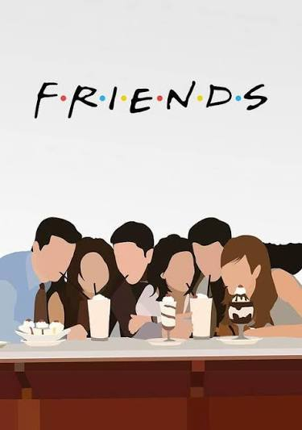

EDİTÖRÜN SEÇİMİ
Sherlock
Gizemli olaylar,keskin zeka ve beklenmedik çözümlerle dolu bir detektiflik hikayesi.
Dizileri KeşfetBu Hafta Popüler Olan Diziler
Haftanın öne çıkan yapımlarını keşfet ve izleme listene yeni diziler ekle.

The Mentalist
Üstün gözlem yeteneğiyle en karmaşık suçları aydınlatan Patrick Jane'in hikayesi.

Friends
New York'ta yaşayan altı arkadaşın dostluk aşk ve kahkaha dolu hayatı.

Stranger Things
Sıradan bir kasabada başlayan olaylar, grubun hayatını sonsuza dek değiştirir.
AfterCredits Hakkında
AfterCredits, dizi severlerin yeni hikayeler keşfetmesi ve izlemek istedikleri yapımlar hakkında fikir edinmesi için tasarlanmış bir platformdur. Amacımız, farklı türdeki dizileri bir araya getirerek kullanıcıların kendi ilgi alanlarına uygun yapımları kolayca keşfetmelerini sağlamaktır.